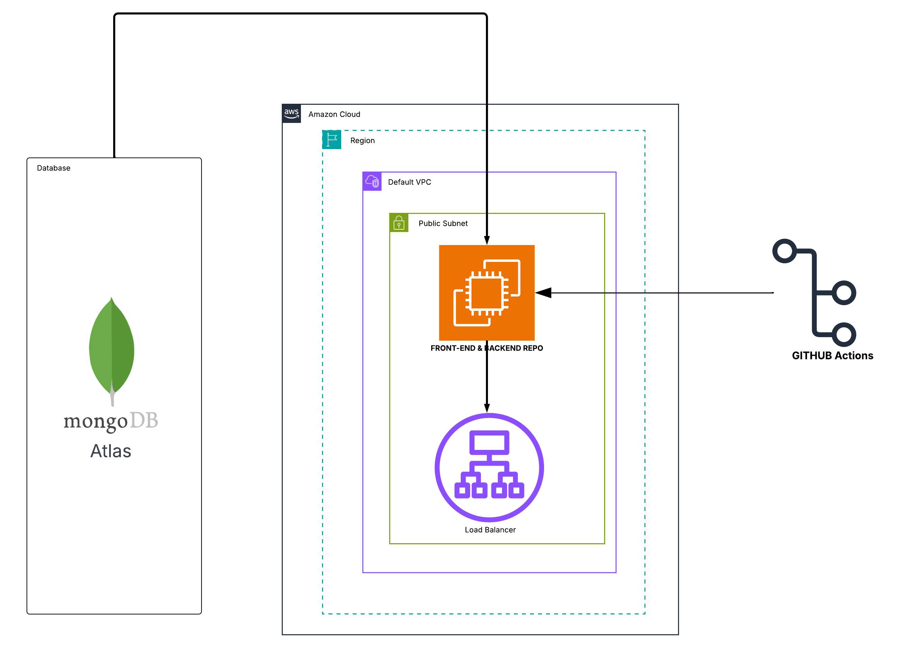

Technical Documentation
Architecture Overview
The system follows a MERN stack architecture with both frontend and backend deployed on a single AWS EC2 instance, communicating with MongoDB Atlas cloud database.

Tech Stack
| Layer | Technology | Purpose |
|---|---|---|
| Frontend | React.js | User interface |
| Bootstrap | Styling and responsive design | |
| Axios | API communication | |
| Backend | Node.js | Server runtime |
| Express.js | API framework | |
| Mongoose | MongoDB object modeling | |
| Database | MongoDB Atlas | Cloud database |
| Deployment | AWS EC2 | Virtual server |
| PM2 | Process manager | |
| Application Load Balancer | Traffic routing | |
| GitHub Actions | CI/CD pipeline | |
| Tools | npm | Package manager |
| Postman | API testing |
AWS Infrastructure
| Component | Details |
|---|---|
| Region | US East (Virginia) - us-east-1 |
| VPC | Default VPC with public subnet |
| Instance | 1 EC2 instance (Frontend + Backend) |
| Load Balancer | Application Load Balancer with custom domain |
| Security | Security groups with HTTPS access |
Terms Explained:
- EC2: Virtual server in the cloud
- VPC: Isolated network for your resources
- Public Subnet: Network allowing internet access
- PM2: Keeps applications running continuously
- Load Balancer: Routes traffic to frontend (port 3000) and backend (port 8000)
Deployment Architecture
flowchart TB
User((User)) --> LB[Load Balancer + Domain]
LB -->|Rule 1: Port 3000| FE[Frontend React]
LB -->|Rule 2: Port 8000| BE[Backend Express]
subgraph EC2["EC2 Instance"]
FE
BE
end
BE <-->|Mongoose| DB[(MongoDB Atlas)]How it works:
- Load balancer routes domain traffic
- Target Rule 1: Frontend (port 3000)
- Target Rule 2: Backend API (port 8000)
- Both applications managed by PM2
Data Flow Diagram
Level 0: System Context
flowchart TB
User((User)) --> System[Hotel Booking System]
System --> Database[(MongoDB Atlas)]Level 1: Main System Flow
flowchart LR
User((User)) --> LB[Load Balancer]
LB --> FE[React Frontend]
LB --> BE[Express Backend]
BE <-->|Mongoose| DB[(MongoDB Atlas)]Level 2: Detailed Data Flow
flowchart TD
User((User)) --> LB[Load Balancer]
subgraph EC2["EC2 Instance"]
direction TB
FE[Frontend React<br/>Port 3000<br/>PM2]
BE[Backend Express<br/>Port 8000<br/>PM2]
end
subgraph Database["MongoDB Atlas"]
Users[(Users)]
Hotels[(Hotels)]
Bookings[(Bookings)]
end
LB -->|Route to :3000| FE
LB -->|Route to :8000| BE
FE -->|1. Search Hotels| BE
BE -->|2. Query| Hotels
Hotels -->|3. Results| BE
BE -->|4. Response| FE
FE -->|5. Book Room| BE
BE -->|6. Check User| Users
BE -->|7. Create Booking| Bookings
Bookings -->|8. Confirmation| BE
BE -->|9. Success| FE
FE --> LB
LB --> UserAuthentication Flow
flowchart TD
A[User enters credentials] --> B[Frontend sends POST /login]
B --> C[Backend validates credentials]
C --> D{Valid User?}
D -->|Yes| E[Return user data]
D -->|No| F[Return error]
E --> G[Store in localStorage]
G --> H[User logged in]
F --> I[Show error message]How it works:
- User enters email and password
- Backend checks credentials against Users collection
- Valid users get data stored in browser localStorage
- Required for booking and profile access
Authorization Levels
flowchart TD
A[User Access] --> B{Check User Role}
B -->|isAdmin: true| C[Admin Dashboard]
B -->|isAdmin: false| D[User Pages]
B -->|Not Logged In| E[Login Page]
C --> C1[Manage Hotels]
C --> C2[Manage Bookings]
C --> C3[View Users]
D --> D1[Search Hotels]
D --> D2[Book Rooms]
D --> D3[View Profile]Access Levels:
- Normal User: Search, view, and book hotels
- Admin: Full system management access
Deployment Pipeline
flowchart TD
A[Developer pushes code] --> B[GitHub Repository]
B --> C[GitHub Actions triggered]
subgraph CI/CD["CI/CD Pipeline"]
D[Checkout frontend branch]
E[Build React app]
F[Checkout backend branch]
G[Install dependencies]
end
C --> D
D --> E
E --> F
F --> G
G --> H[Deploy to EC2]
subgraph EC2["EC2 Instance"]
I[PM2 restart backend]
J[PM2 serve frontend]
end
H --> I
H --> J
I --> K[Live Application]
J --> KDeployment Steps:
- Code pushed to GitHub (separate frontend/backend branches)
- GitHub Actions runs automated deployment
- Frontend: Build React app → Serve with PM2
- Backend: Install dependencies → Run with PM2
- Load balancer routes traffic to both services
Data Storage
localStorage (Browser):
- Logged-in user information
- Session management
MongoDB Collections:
- Users collection (authentication data)
- Hotels collection (hotel and room data)
- Bookings collection (reservation records)